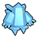

Access to:
Exit: Clay Tunnel
Regirock's room, the Rock Peak Chamber, can be encountered by taking 6 steps south and 8 east from the middle of the panel in front of the large door.
Registeel's room, the Iron Chamber, requires the Iron Key. In Black 2, the Iron Key is obtained by catching Regirock. In White 2, the Iron Key must be obtained through Unova Link from Black 2.
Regice's room, the Iceberg Chamber, requires the Iceberg Key. In Black 2, the Iceberg Key must be obtained through Unova Link from White 2. In White 2, the Iceberg Key is obtained by catching Regirock.
| Pokémon | Level | Notes | |
|---|---|---|---|
| Regirock | 65 | In the Rock Peak Chamber. If defeated or run from, it reappears after defeating the Elite Four. | |
|
 |
Regice | 65 | In the Iceberg Chamber with the Iceberg Key active in the Key System. If defeated or run from, it reappears after defeating the Elite Four. |
| Registeel | 65 | In the Iron Chamber with the Iron Key active in the Key System. If defeated or run from, it reappears after defeating the Elite Four. | |
The following items can be found by stepping in a dust cloud.
| Fire Gem | Water Gem | Electric Gem | Grass Gem | Ice Gem | Fighting Gem |
| Poison Gem | Ground Gem | Flying Gem | Psychic Gem | Bug Gem | Rock Gem |
| Ghost Gem | Dragon Gem | Dark Gem | Steel Gem | Normal Gem | Fire Stone |
| Water Stone | Thunderstone | Leaf Stone | Moon Stone | Sun Stone | Shiny Stone |
| Dusk Stone | Dawn Stone | Oval Stone | Everstone | ||